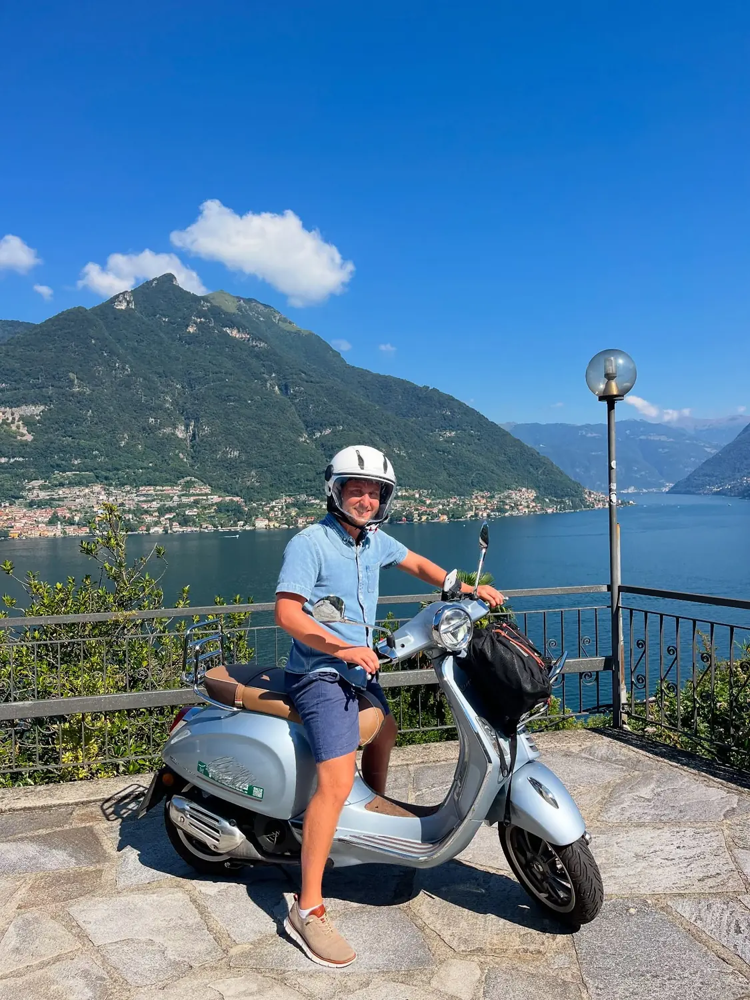
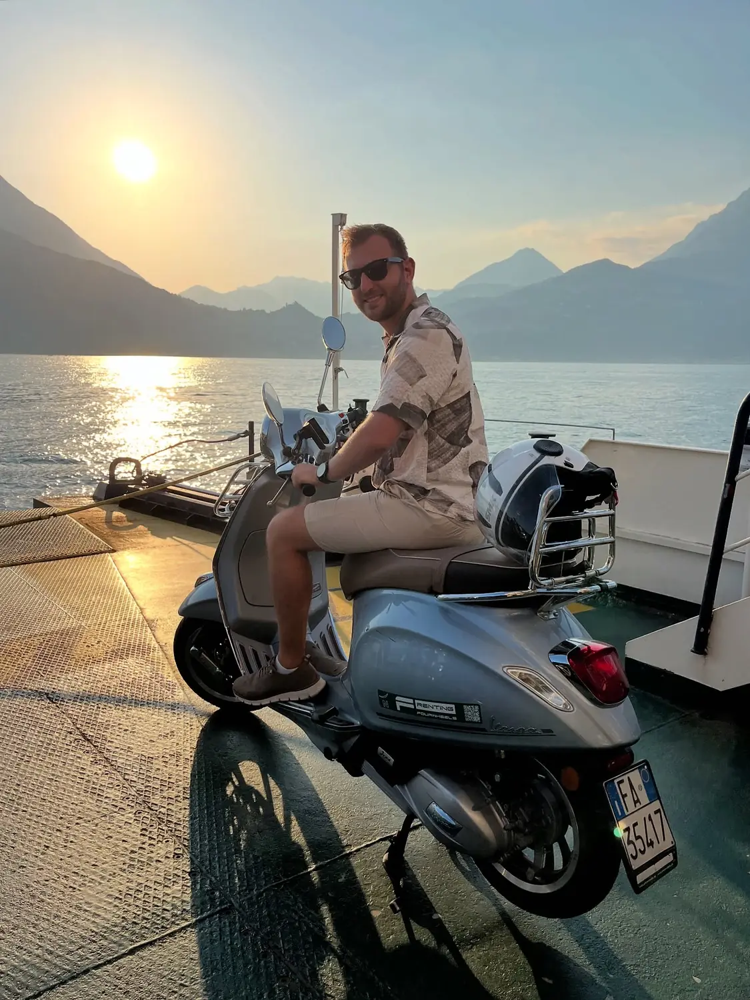

How we did it01
Ride in by Vespa
📍 Milan → Lake Como, and all around the shore
If you can ride, do this. We picked up a Vespa in Milan and buzzed up to the lake, then spent our days weaving along the shoreline roads from village to village, stopping at every viewpoint that caught our eye. The lake is shaped like an upside-down Y, so you'll also want the car ferry in the middle (Bellagio–Varenna–Menaggio) — rolling the Vespa on board at sunset was a trip highlight in itself.
Rent in MilanUse the mid-lake ferry